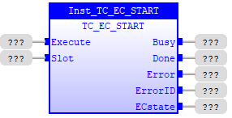
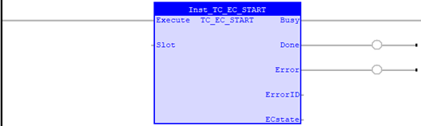

System Command
Starts the EtherCAT network.
|
Execute : BOOL; |
Rising edge requests execution |
|
Slot : INT; |
Slot number of EtherCAT port |
|
Busy : BOOL; |
TRUE if function is running |
|
Done : BOOL; |
TRUE when function has completed normally |
|
Error : BOOL; |
TRUE if a program error is detected |
|
ErrorID : UINT; |
Returned error number |
|
ECstate: UINT; |
State of EtherCAT network |
This function block starts the EtherCAT network. It Initialises EtherCAT network, and puts it onto operational mode.
In normal use the EtherCAT network will start automatically without the need for any commands in a startup program. Some EtherCAT functions may be useful when debugging and setting up an EtherCAT system.
Inst_TC_EC_START( Execute (*BOOL*) , Slot (*INT*) );

